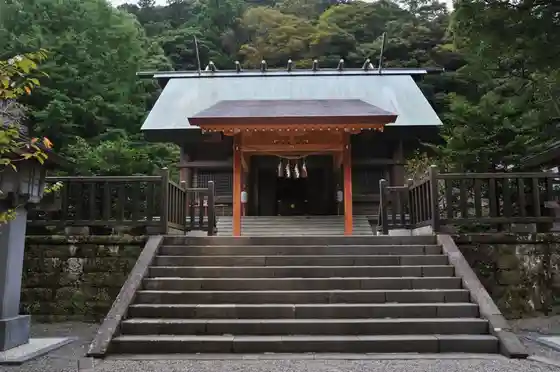
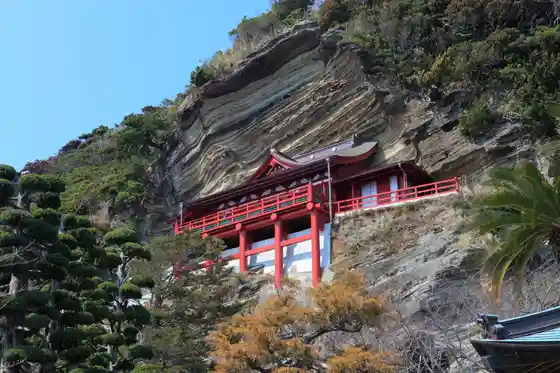
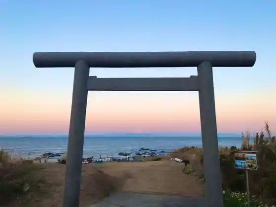
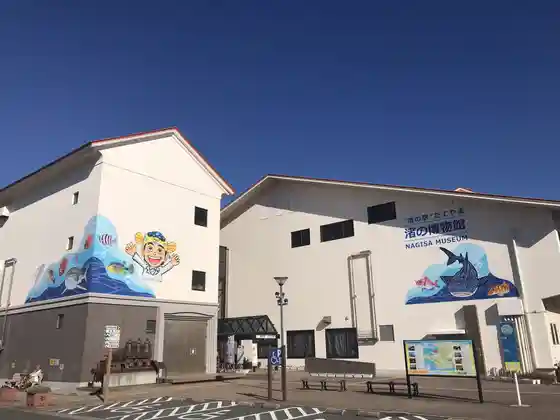

Oki no Shima Park
Tateyama, Chiba · 0470-22-3346 · Official / source link
Awa Kuniichi Yuki Miya Awa Shrine
Tateyama, Chiba · 0470-28-0034 · Official / source link

Daifuku Tera (Gake Kannon)
Tateyama, Chiba · 0470-27-2247 · Official / source link

Suzaki Shrine
Tateyama, Chiba · 0470-22-2000 · Official / source link

Nagisa no Eki Tateyama
Tateyama, Chiba · 0470-28-5223 · Official / source link

Hojo Coast (Beach)
Tateyama, Chiba · 0470-22-3346 · Official / source link
Kisetsu no Hana (Na no Hana) / Boso Furawa Line
Tateyama, Chiba · 0470-22-2000 · Official / source link
Sunosaki Lighthouse
Tateyama, Chiba · 0470-22-2000 · Official / source link
Roadside Station Guriin Farm Tateyama
Tateyama, Chiba · 0470-29-7015 · Official / source link
Tateyama Kaigun Kokutai Akayama Chika Hori Ato
Tateyama, Chiba · 0470-24-1911 · Official / source link
CAMPGROUND BREEZE TATEYAMA
Tateyama, Chiba · Official / source link
Shiroyama Park (Tateyama Shiro)
Tateyama, Chiba · 0470-22-8854 · Official / source link
Hazama Beach
Tateyama, Chiba · 0470-22-3346 · Official / source link
Kanko Teichiami Ryo Kengaku / Sakata Gyoko Oki
Tateyama, Chiba · Official / source link
Tateyama Ichigo Kari Center
Tateyama, Chiba · 0470-22-3466 · Official / source link
Jibie Kaitai Experience / Tateyama Jibie Center
Tateyama, Chiba · Official / source link
Tateyama Ritsu Museum
Tateyama, Chiba · 0470-23-5212 · Official / source link
Genchi Koza (Kaitai Kengaku) / Tateyama Jibie Center
Tateyama, Chiba · Official / source link
Fishing Port Shokudo Daibo
Tateyama, Chiba · 0470-29-1221 · Official / source link
Tateyama Jibie Center
Tateyama, Chiba · 0470-29-3919 · Official / source link
Nako Tera
Tateyama, Chiba · 047-27-2444 · Official / source link
Tateyama Yacho Forest
Tateyama, Chiba · 0470-28-0166 · Official / source link
Nippon Sandai Uchiwa (Boshu Uchiwa Tsukuri Experience) to Rentasaikuru
Tateyama, Chiba · 0470-22-2000 · Official / source link
Toyofusaichigo Sono / Tateyama Kanko Ichigo Kari Center
Tateyama, Chiba · 0470-22-4717 · Official / source link
Arai Beach
Tateyama, Chiba · 0470-22-3346 · Official / source link
Tomorokoshi Shukaku Experience / Hyaku Warai Sono
Tateyama, Chiba · Official / source link
Tsuruya Hachiman Shrine
Tateyama, Chiba · 0470-22-1258 · Official / source link
Kisetsu no Hana (Tsutsuji) / Shiroyama Park
Tateyama, Chiba · Official / source link
Ichigo Kari / Roadside Station Guriin Farm Tateyama
Tateyama, Chiba · Official / source link
Minamiboso Na no Hana Village
Tateyama, Chiba · 0470-36-4017 · Official / source link
Sora Mame no Shukaku Experience / Anzai Farm
Tateyama, Chiba · Official / source link
JA Guriin Tateyama Mise
Tateyama, Chiba · 0470-30-9211 · Official / source link